Last updated: 2022-04-13
Checks: 7 0
Knit directory: veg_alcontar/
This reproducible R Markdown analysis was created with workflowr (version 1.7.0). The Checks tab describes the reproducibility checks that were applied when the results were created. The Past versions tab lists the development history.
Great! Since the R Markdown file has been committed to the Git repository, you know the exact version of the code that produced these results.
Great job! The global environment was empty. Objects defined in the global environment can affect the analysis in your R Markdown file in unknown ways. For reproduciblity it’s best to always run the code in an empty environment.
The command set.seed(20211007) was run prior to running the code in the R Markdown file. Setting a seed ensures that any results that rely on randomness, e.g. subsampling or permutations, are reproducible.
Great job! Recording the operating system, R version, and package versions is critical for reproducibility.
Nice! There were no cached chunks for this analysis, so you can be confident that you successfully produced the results during this run.
Great job! Using relative paths to the files within your workflowr project makes it easier to run your code on other machines.
Great! You are using Git for version control. Tracking code development and connecting the code version to the results is critical for reproducibility.
The results in this page were generated with repository version 8ac0cd2. See the Past versions tab to see a history of the changes made to the R Markdown and HTML files.
Note that you need to be careful to ensure that all relevant files for the analysis have been committed to Git prior to generating the results (you can use wflow_publish or wflow_git_commit). workflowr only checks the R Markdown file, but you know if there are other scripts or data files that it depends on. Below is the status of the Git repository when the results were generated:
Ignored files:
Ignored: .Rhistory
Ignored: .Rproj.user/
Untracked files:
Untracked: data/Cobertura_fitovolumen_corregido_parcela.xlsx
Unstaged changes:
Modified: output/paper_SUDOE/compara_cobertura.jpg
Note that any generated files, e.g. HTML, png, CSS, etc., are not included in this status report because it is ok for generated content to have uncommitted changes.
These are the previous versions of the repository in which changes were made to the R Markdown (analysis/compara_methods.Rmd) and HTML (docs/compara_methods.html) files. If you’ve configured a remote Git repository (see ?wflow_git_remote), click on the hyperlinks in the table below to view the files as they were in that past version.
| File | Version | Author | Date | Message |
|---|---|---|---|---|
| Rmd | 8ac0cd2 | ajpelu | 2022-04-13 | add new analysis |
| html | a3d3eb4 | ajpelu | 2022-04-01 | Build site. |
| Rmd | 2a0a2cb | ajpelu | 2022-04-01 | update analysis paper sudoe |
| html | b4ebf2e | ajpelu | 2022-04-01 | Build site. |
| Rmd | a6c71fa | ajpelu | 2022-04-01 | add analysis_SUDOE cobertura |
| Rmd | 1cf2118 | ajpelu | 2022-02-04 | update |
| html | 792adb1 | ajpelu | 2022-02-02 | Build site. |
| Rmd | 179f390 | ajpelu | 2022-02-02 | genera plots compara metodos |
Comparison of estimation methods for coverage, phytovolume, richness and diversity (shannon)
| metodo | mean | sd | se | cv | median | n |
|---|---|---|---|---|---|---|
| quadrat | 29.92 | 18.47 | 1.89 | 61.75 | 26.50 | 96 |
| dronQ | 23.55 | 21.01 | 2.14 | 89.23 | 15.74 | 96 |
| line_intercept | 27.19 | 6.49 | 1.87 | 23.86 | 29.67 | 12 |
| point_quadrat | 55.50 | 7.62 | 2.20 | 13.73 | 56.00 | 12 |
| dronT | 17.46 | 2.71 | 0.78 | 15.51 | 17.07 | 12 |
Comprobamos Normalidad y Homocedascticidad
Normality?
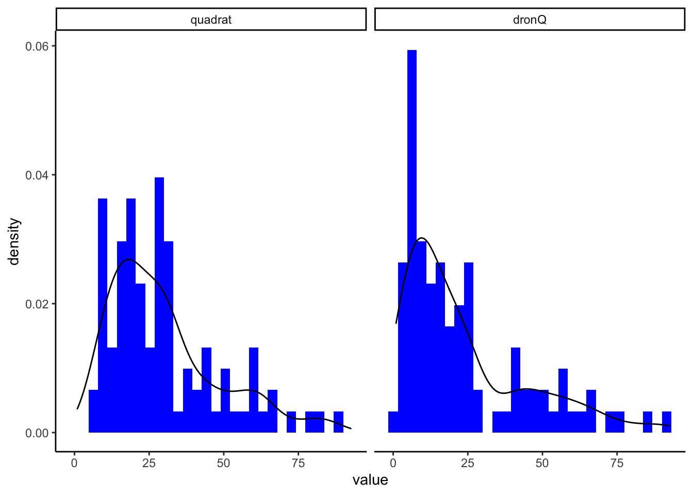
Shapiro-Wilk normality test
data: cob_selected$value
W = 0.89104, p-value = 1.299e-10Los resultados indican que los datos no son normales (W = 0.89; p<0.0001)
Bartlett test of homogeneity of variances
data: cob_selected$value and cob_selected$metodo
Bartlett's K-squared = 1.5582, df = 1, p-value = 0.2119Según los resultados, no parece existir heterogeneidad en las varianzas (Bartlett’s K-squared = 1.56; p=0.2119)
Por tanto, dos opciones: aplicar método wilcox.test o transformar datos (log) y aplicar t-test
Wilcoxon rank sum test with continuity correction
data: value by metodo
W = 5967.5, p-value = 0.0004154
alternative hypothesis: true location shift is not equal to 0En cualquier caso obtenemos los siguientes resultados: - Existen diferencias significativas tanto si usamos el test no paramétrico de Wilcoxon (W = 5967.5; p=0.0004), como si aplicamos el test paramétrico a los datos transformados (t = 3.997; p<0.0001). De forma gráfica
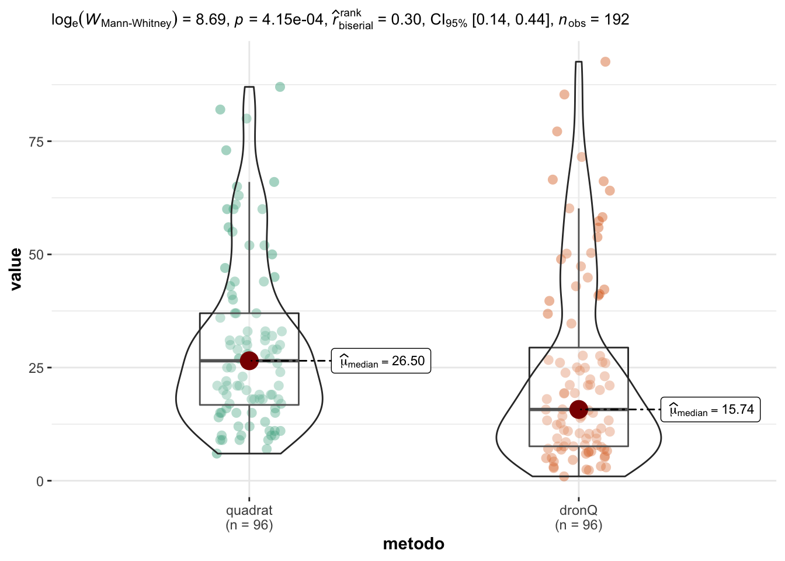
Ver resultados presentados al congreso forestal
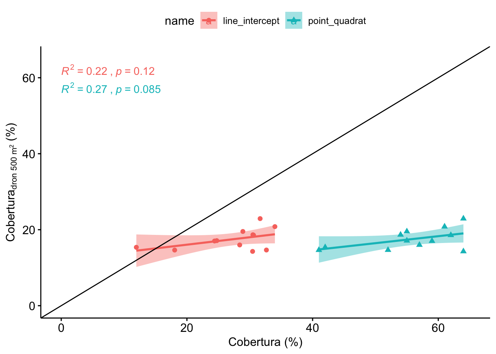
Vamos a realizar la comparación seleccionando para cada parcela (n=12) un valor de cobertura de quadrats. Éste valor se calcula mediante dos aproximaciones:
# A tibble: 12 x 3
parcela value metodo
<chr> <dbl> <chr>
1 AL_NP_13 36.4 quadrat medio
2 AL_NP_7 21.8 quadrat medio
3 AL_NP_8 33 quadrat medio
4 AL_NP_9 29.9 quadrat medio
5 AL_P_11 24.9 quadrat medio
6 AL_P_12 33.9 quadrat medio
7 AL_P_14 31.8 quadrat medio
8 AL_P_4 37.5 quadrat medio
9 AL_PR_15 29.8 quadrat medio
10 AL_PR_16 32.6 quadrat medio
11 AL_PR_17 21.2 quadrat medio
12 AL_PR_18 26.4 quadrat medio| statistic | p.value | parameter | method | mi_variable |
|---|---|---|---|---|
| 27.11094 | 5.6e-06 | 3 | Kruskal-Wallis rank sum test | cobertura |
| H0 | statistic | p.value |
|---|---|---|
| line_intercept = point_quadrat | 4.56 | <0.001 |
| line_intercept = quadrat medio | 0.80 | >0.999 |
| line_intercept = quadrat media ponderada | 0.29 | >0.999 |
| point_quadrat = quadrat medio | 3.76 | 0.001 |
| point_quadrat = quadrat media ponderada | 4.27 | <0.001 |
| quadrat medio = quadrat media ponderada | 0.51 | >0.999 |
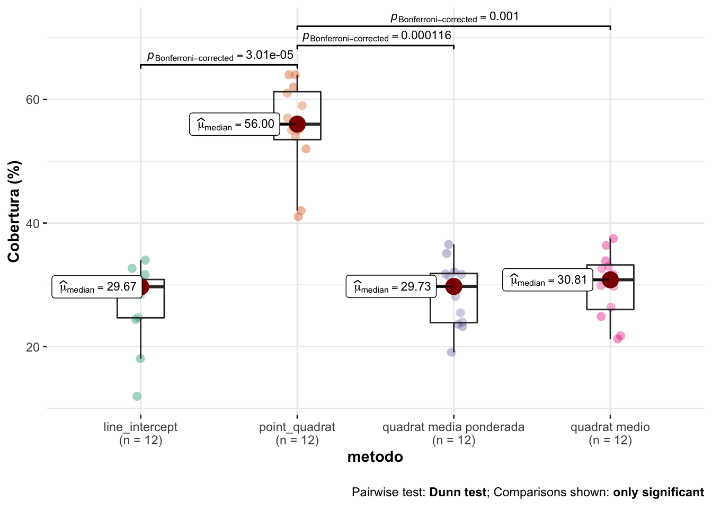
Observamos que no hay diferencias entre LI, y los quadrats medios, ni quadrats ponderado.
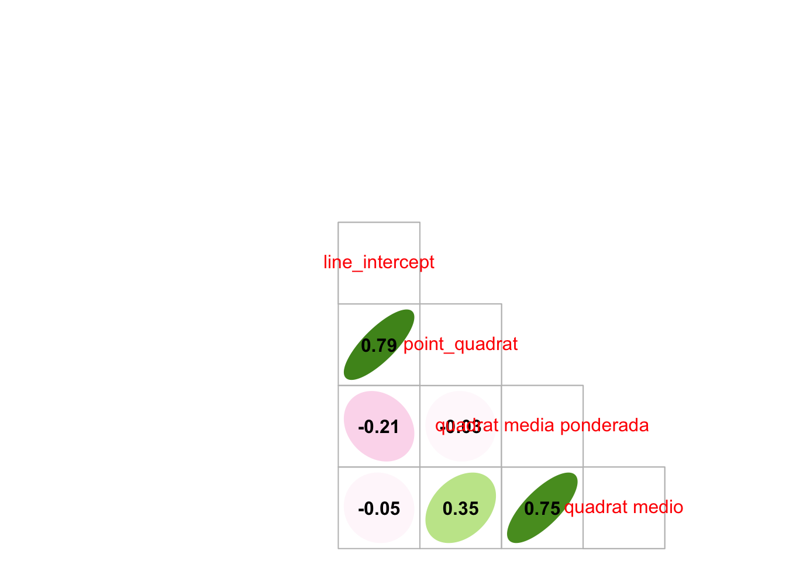
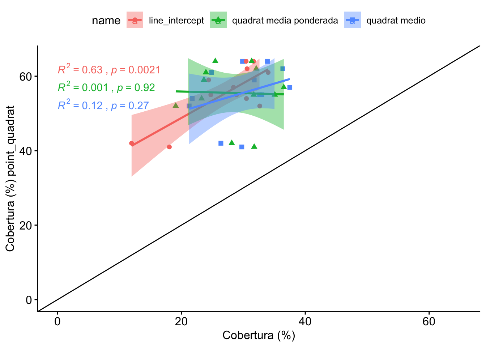
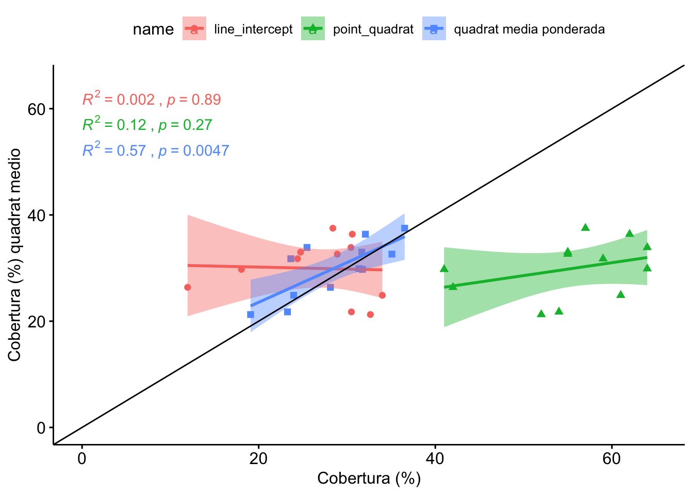
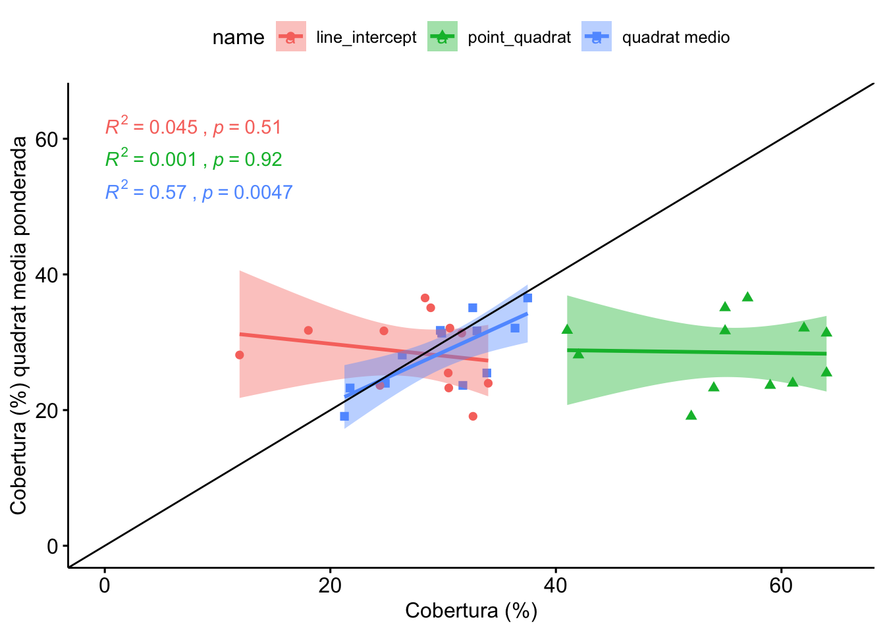
Analizamos los datos de CV, si son diferentes significativamente. Aplicamos el test MSLRT (Modified signed-likelihood ratio test) para cada uno de los pares de métodos.
| V1 | V2 | MSLRT | p_value |
|---|---|---|---|
| quadrat | dronQ | 6.13 | 0.01326 |
| quadrat | line_intercept | 9.22 | 0.00240 |
| quadrat | point_quadrat | 19.22 | 0.00001 |
| quadrat | dronT | 16.88 | 0.00004 |
| dronQ | line_intercept | 13.98 | 0.00019 |
| dronQ | point_quadrat | 24.60 | 0.00000 |
| dronQ | dronT | 22.16 | 0.00000 |
| line_intercept | point_quadrat | 2.88 | 0.08977 |
| line_intercept | dronT | 1.77 | 0.18398 |
| point_quadrat | dronT | 0.14 | 0.70956 |
| metodo | mean | sd | se | cv | median | n |
|---|---|---|---|---|---|---|
| quadrat | 778.57 | 1108.78 | 113.16 | 142.41 | 323.40 | 96 |
| dronQ | 421.70 | 678.47 | 69.25 | 160.89 | 125.90 | 96 |
| line_intercept | 531.04 | 274.90 | 79.36 | 51.77 | 543.13 | 12 |
| dronT | 450.63 | 141.74 | 40.92 | 31.45 | 408.39 | 12 |
| statistic | p.value | parameter | method | mi_variable |
|---|---|---|---|---|
| 23.40999 | 3.32e-05 | 3 | Kruskal-Wallis rank sum test | fitovolumen |
| H0 | statistic | p.value |
|---|---|---|
| quadrat = dronQ | 4.20 | 0.0002 |
| quadrat = line_intercept | 0.74 | 1.0000 |
| quadrat = dronT | 0.68 | 1.0000 |
| dronQ = line_intercept | 2.72 | 0.0397 |
| dronQ = dronT | 2.66 | 0.0464 |
| line_intercept = dronT | 0.04 | 1.0000 |
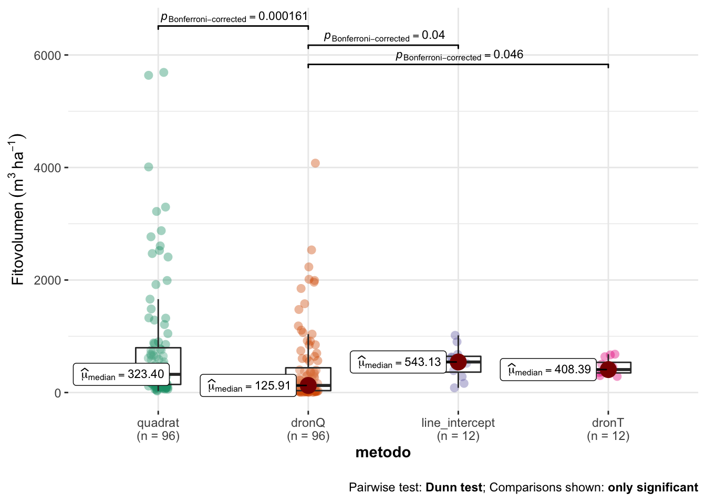
Analizamos los datos de CV, si son diferentes significativamente. Aplicamos el test MSLRT (Modified signed-likelihood ratio test) para cada uno de los pares de métodos.
| V1 | V2 | MSLRT | p_value |
|---|---|---|---|
| quadrat | dronQ | 0.27 | 0.60538 |
| quadrat | line_intercept | 4.69 | 0.03041 |
| quadrat | dronT | 10.28 | 0.00135 |
| dronQ | line_intercept | 4.89 | 0.02694 |
| dronQ | dronT | 9.99 | 0.00158 |
| line_intercept | dronT | 1.94 | 0.16351 |
| metodo | mean | sd | se | cv | median | n |
|---|---|---|---|---|---|---|
| quadrat | 10.57 | 3.89 | 0.40 | 36.77 | 10.0 | 96 |
| line_intercept | 13.00 | 3.10 | 0.90 | 23.88 | 13.0 | 12 |
| point_quadrat | 13.17 | 4.24 | 1.22 | 32.20 | 14.0 | 12 |
| point_quadrat_extenso | 31.50 | 7.99 | 2.31 | 25.38 | 29.5 | 12 |
| quadrat_parcela | 34.08 | 10.39 | 3.00 | 30.48 | 34.5 | 12 |
| statistic | p.value | parameter | method | mi_variable |
|---|---|---|---|---|
| 64.59165 | 0 | 4 | Kruskal-Wallis rank sum test | riqueza |
| H0 | statistic | p.value |
|---|---|---|
| quadrat = line_intercept | 1.82 | 0.6853 |
| quadrat = point_quadrat | 1.68 | 0.9341 |
| quadrat = point_quadrat_extenso | 5.90 | 0.0000 |
| quadrat = quadrat_parcela | 6.02 | 0.0000 |
| line_intercept = point_quadrat | 0.11 | 1.0000 |
| line_intercept = point_quadrat_extenso | 3.06 | 0.0221 |
| line_intercept = quadrat_parcela | 3.15 | 0.0163 |
| point_quadrat = point_quadrat_extenso | 3.17 | 0.0153 |
| point_quadrat = quadrat_parcela | 3.26 | 0.0112 |
| point_quadrat_extenso = quadrat_parcela | 0.09 | 1.0000 |
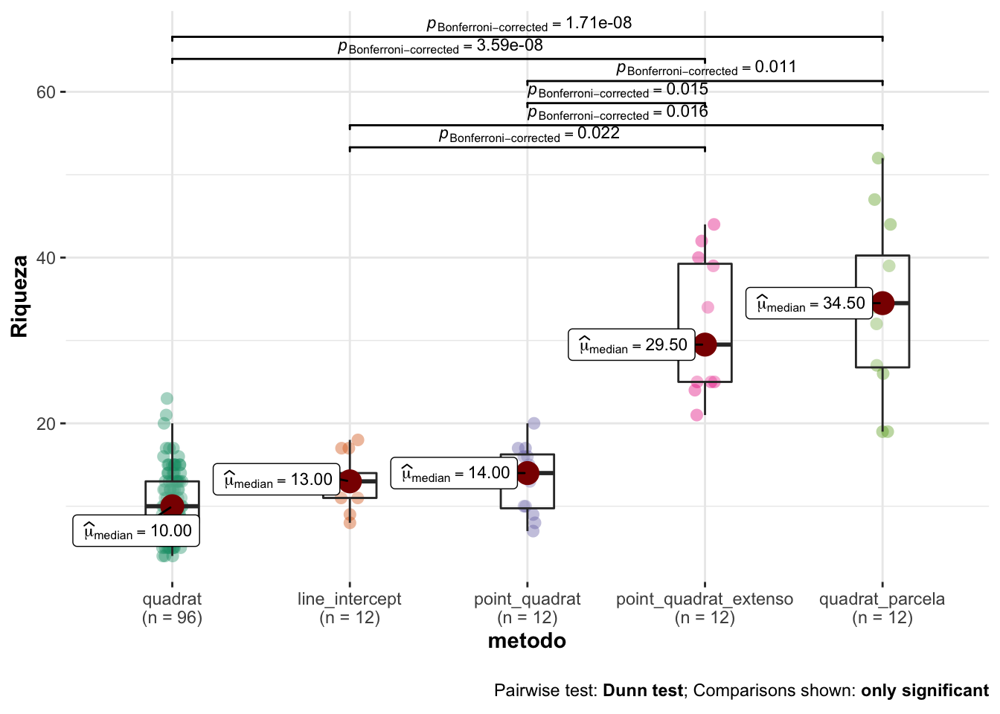
Analizamos los datos de CV, si son diferentes significativamente. Aplicamos el test MSLRT (Modified signed-likelihood ratio test) para cada uno de los pares de métodos.
| V1 | V2 | MSLRT | p_value |
|---|---|---|---|
| quadrat | line_intercept | 2.82 | 0.09335 |
| quadrat | point_quadrat | 0.40 | 0.52492 |
| quadrat | point_quadrat_extenso | 2.18 | 0.14018 |
| quadrat | quadrat_parcela | 0.70 | 0.40309 |
| line_intercept | point_quadrat | 0.80 | 0.37022 |
| line_intercept | point_quadrat_extenso | 0.02 | 0.87866 |
| line_intercept | quadrat_parcela | 0.54 | 0.46359 |
| point_quadrat | point_quadrat_extenso | 0.50 | 0.47807 |
| point_quadrat | quadrat_parcela | 0.01 | 0.90371 |
| point_quadrat_extenso | quadrat_parcela | 0.30 | 0.58628 |
| metodo | mean | sd | se | cv | median | n |
|---|---|---|---|---|---|---|
| quadrat | 1.34 | 0.56 | 0.06 | 41.72 | 1.37 | 96 |
| line_intercept | 1.72 | 0.49 | 0.14 | 28.71 | 1.63 | 12 |
| point_quadrat | 1.99 | 0.45 | 0.13 | 22.82 | 1.95 | 12 |
OK: There is not clear evidence for different variances across groups (Bartlett Test, p = 0.611).OK: residuals appear as normally distributed (p = 0.168).| Parameter | Sum_Squares | df | Mean_Square | F | p | Eta2 | Eta2_CI_low | Eta2_CI_high |
|---|---|---|---|---|---|---|---|---|
| metodo | 5.41 | 2 | 2.71 | 9.09 | 0.00021 | 0.134 | 0.046 | 0.227 |
| Residuals | 34.83 | 117 | 0.30 |
The ANOVA (formula: value ~ metodo) suggests that:
- The main effect of metodo is statistically significant and medium (F(2, 117) = 9.09, p < .001; Eta2 = 0.13, 90% CI [0.05, 0.23])
Effect sizes were labelled following Field's (2013) recommendations.| contrast | estimate | SE | df | t.ratio | p.value |
|---|---|---|---|---|---|
| quadrat - line_intercept | -0.378 | 0.167 | 117 | -2.27 | 0.0760 |
| quadrat - point_quadrat | -0.642 | 0.167 | 117 | -3.84 | 0.0006 |
| line_intercept - point_quadrat | -0.263 | 0.223 | 117 | -1.18 | 0.7181 |
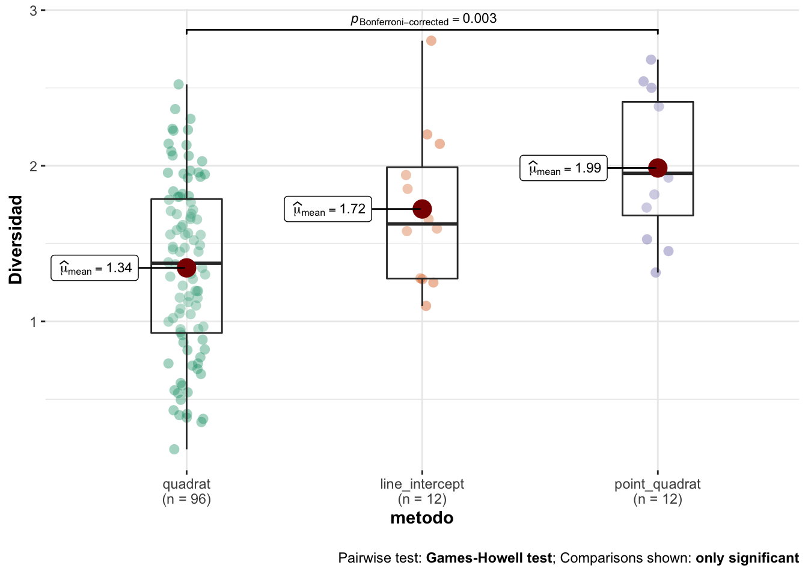
Analizamos los datos de CV, si son diferentes significativamente. Aplicamos el test MSLRT (Modified signed-likelihood ratio test) para cada uno de los pares de métodos.
| V1 | V2 | MSLRT | p_value |
|---|---|---|---|
| quadrat | line_intercept | 2.13 | 0.14465 |
| quadrat | point_quadrat | 4.81 | 0.02832 |
| line_intercept | point_quadrat | 0.48 | 0.48795 |
R version 4.0.2 (2020-06-22)
Platform: x86_64-apple-darwin17.0 (64-bit)
Running under: macOS Catalina 10.15.3
Matrix products: default
BLAS: /Library/Frameworks/R.framework/Versions/4.0/Resources/lib/libRblas.dylib
LAPACK: /Library/Frameworks/R.framework/Versions/4.0/Resources/lib/libRlapack.dylib
locale:
[1] en_US.UTF-8/en_US.UTF-8/en_US.UTF-8/C/en_US.UTF-8/en_US.UTF-8
attached base packages:
[1] stats graphics grDevices utils datasets methods base
other attached packages:
[1] corrplot_0.92 multcompView_0.1-8 ggtext_0.1.1 PMCMRplus_1.9.3
[5] PMCMR_4.3 statmod_1.4.36 tweedie_2.3.3 report_0.3.0
[9] kableExtra_1.3.1 cvequality_0.2.0 performance_0.8.0 ggdist_3.0.1
[13] Metrics_0.1.4 ggstatsplot_0.7.2 colorspace_2.0-2 ggpubr_0.4.0
[17] ggforce_0.3.2 ggdark_0.2.1 janitor_2.1.0 here_1.0.1
[21] forcats_0.5.1 stringr_1.4.0 dplyr_1.0.6 purrr_0.3.4
[25] readr_1.4.0 tidyr_1.1.3 tibble_3.1.2 ggplot2_3.3.5
[29] tidyverse_1.3.1 workflowr_1.7.0
loaded via a namespace (and not attached):
[1] readxl_1.3.1 pairwiseComparisons_3.1.3
[3] backports_1.2.1 systemfonts_1.0.0
[5] plyr_1.8.6 splines_4.0.2
[7] gmp_0.6-2 kSamples_1.2-9
[9] ipmisc_5.0.2 TH.data_1.0-10
[11] digest_0.6.27 SuppDists_1.1-9.5
[13] htmltools_0.5.2 fansi_0.4.2
[15] magrittr_2.0.1 memoise_2.0.0
[17] paletteer_1.3.0 openxlsx_4.2.3
[19] modelr_0.1.8 sandwich_3.0-0
[21] rvest_1.0.0 ggrepel_0.9.1
[23] textshaping_0.3.2 haven_2.3.1
[25] xfun_0.23 prismatic_1.0.0
[27] callr_3.7.0 crayon_1.4.1
[29] jsonlite_1.7.2 zeallot_0.1.0
[31] survival_3.2-7 zoo_1.8-8
[33] glue_1.4.2 polyclip_1.10-0
[35] gtable_0.3.0 emmeans_1.5.4
[37] webshot_0.5.2 MatrixModels_0.4-1
[39] distributional_0.3.0 statsExpressions_1.1.0
[41] car_3.0-10 Rmpfr_0.8-2
[43] abind_1.4-5 scales_1.1.1.9000
[45] mvtnorm_1.1-1 DBI_1.1.1
[47] rstatix_0.6.0 Rcpp_1.0.7
[49] gridtext_0.1.4 viridisLite_0.4.0
[51] xtable_1.8-4 foreign_0.8-81
[53] httr_1.4.2 ellipsis_0.3.2
[55] pkgconfig_2.0.3 reshape_0.8.8
[57] farver_2.1.0 sass_0.3.1
[59] dbplyr_2.1.1 utf8_1.1.4
[61] labeling_0.4.2 effectsize_0.4.5
[63] tidyselect_1.1.1 rlang_0.4.12
[65] later_1.1.0.1 ggcorrplot_0.1.3
[67] munsell_0.5.0 cellranger_1.1.0
[69] tools_4.0.2 cachem_1.0.4
[71] cli_2.5.0 generics_0.1.0
[73] broom_0.7.9 evaluate_0.14
[75] fastmap_1.1.0 ragg_1.1.1
[77] BWStest_0.2.2 yaml_2.2.1
[79] rematch2_2.1.2 processx_3.5.1
[81] knitr_1.31 fs_1.5.0
[83] zip_2.1.1 nlme_3.1-152
[85] WRS2_1.1-1 pbapply_1.4-3
[87] whisker_0.4 xml2_1.3.2
[89] correlation_0.6.1 compiler_4.0.2
[91] rstudioapi_0.13 curl_4.3
[93] ggsignif_0.6.0 reprex_2.0.0
[95] tweenr_1.0.1 bslib_0.2.4
[97] stringi_1.7.4 highr_0.8
[99] ps_1.5.0 parameters_0.14.0
[101] lattice_0.20-41 Matrix_1.3-2
[103] vctrs_0.3.8 pillar_1.6.1
[105] lifecycle_1.0.1 mc2d_0.1-18
[107] jquerylib_0.1.3 estimability_1.3
[109] data.table_1.14.0 insight_0.14.4
[111] patchwork_1.1.1 httpuv_1.5.5
[113] R6_2.5.1 promises_1.2.0.1
[115] rio_0.5.16 BayesFactor_0.9.12-4.2
[117] codetools_0.2-18 MASS_7.3-53
[119] gtools_3.8.2 assertthat_0.2.1
[121] rprojroot_2.0.2 withr_2.4.1
[123] multcomp_1.4-16 mgcv_1.8-33
[125] bayestestR_0.9.0 parallel_4.0.2
[127] hms_1.0.0 grid_4.0.2
[129] coda_0.19-4 rmarkdown_2.8
[131] snakecase_0.11.0 carData_3.0-4
[133] git2r_0.28.0 getPass_0.2-2
[135] lubridate_1.7.10